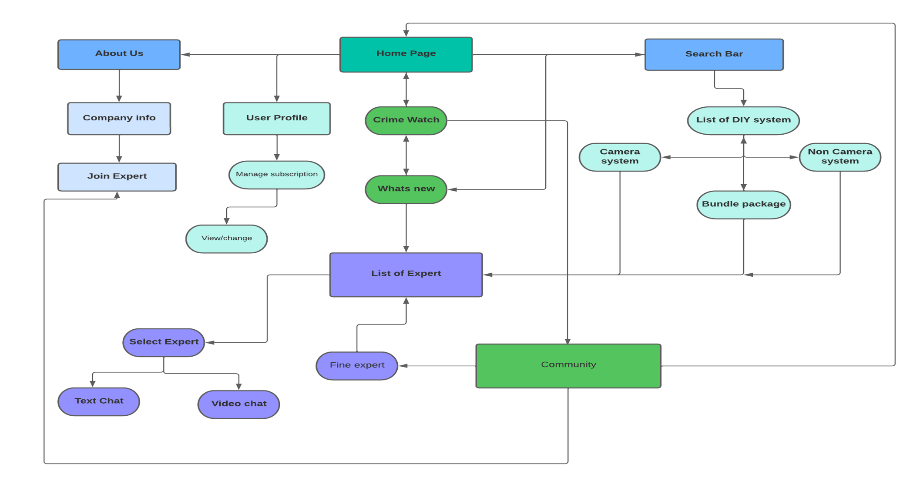

Welcome to the DIY Expert app
Connect easily link up with experts for budget-friendly security systems and stay informed about local crime updates, all at your fingertips.


"The primary aim of this study is to evaluate the user-friendliness of a mobile application, which is intended to assist new users in efficiently comprehending its features. The app is specifically designed to aid users in locating cost-effective security systems, connecting with experts for guidance, and staying updated in real-time about criminal activities within their neighborhood."
I conducted thorough research, conceived innovative designs, and created an application that empowers users by providing education and awareness on the home security market. This initiative is dedicated to enhancing the safety and well-being of communities and was undertaken as part of my UX Design course at CareerFoundry.
Tools
- Figma
- Marvel
- Microsoft 375
- Adobe Suite
- Usability Hub
- Lucid
- Optimal workshop
My Role
- UX design
- UX research
- User Research
- Wireframing
- Prototyping
- Testing
- IA
Timeline
- Overall : 7 months
- Discovery & Research: 2+ weeks
- Design & testing: 5 weeks
My Design process
Problem
Solution
The primary focus of this research is to evaluate the userfriendliness of a mobile application developed to assist newcomers in locating affordable security systems. Moreover, the application facilitates connections with experts for guidance and offers realtime updates on local criminal activities.
Interview & Surveys
In conducting user interviews and surveys, my objective was to gain insight into the preferences and values associated with this app category. I enlisted the participation of four users and, with their consent, recorded these sessions to facilitate quote and observation analysis. I utilized an affinity map to categorize behaviors, attitudes, needs, goals, frustrations, and quotes for better organization and comprehension.
I developed two distinct personas representing individuals with different motivations for using the app. Crafting these personas played a crucial role in guiding the design process, ensuring that the features catered to their specific needs. With the personas in place, I then created a journey map to visualize the unique experiences each persona would encounter while attempting to accomplish various tasks. This approach provided valuable insights into their interactions with the app.


Site Map
After defining the user personas, I moved on to creating User Flows, a valuable tool that outlines the step-by-step processes these individuals will undertake while navigating and completing tasks within the DIY EXPERT app.
